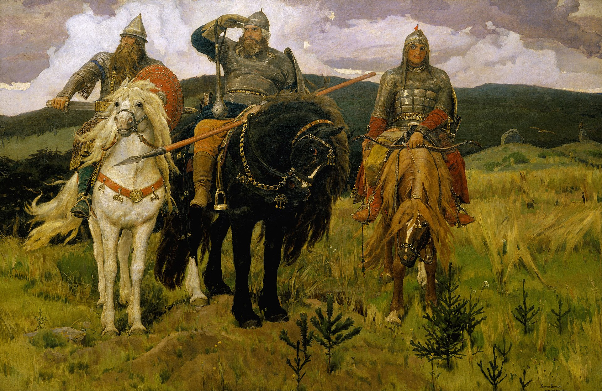
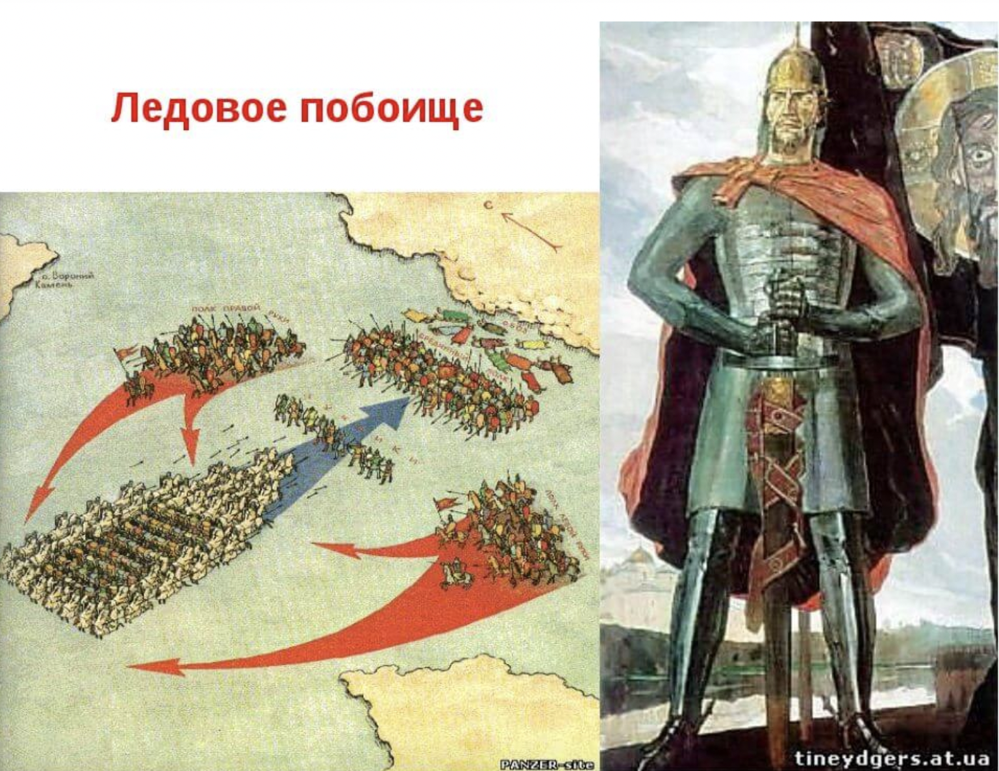
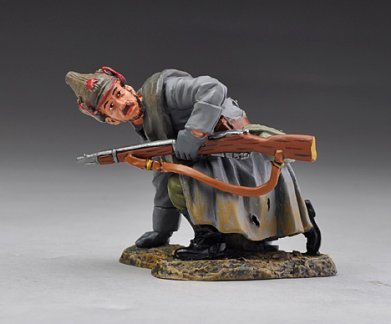

Origins
Poetry for military aristocracy
Original name is: starina
Major themes are hunting and fighting (35)
Pre-10th c. 988
Boyan is a legendary Slavic Epic poetry singer—Homer
3 cycles:
Mythological bylina
Sviatogor the giant (mountain)
Kievan cycle (warrior cycle)
Main characters: prince Vladimir, Ilya Muromets, Dobrynia Nikitich, Alesha Popovich,
Novgorod Cycle
Novgorod: Trade city, Hansa Union member
Sadko the merchant is the main hero
Sadko the gusli player
Non warrior
Structure
Intro—feast
Body of the epic: an adventure of hunting or a battle
Contrast: overwhelming enemy and Ilya is a country bumpkin, then hyperbolic victory
Conclusion: hint about a reward
Main Device:
Hyperbole: Temporal hyperbole. Leaves the city after morning prayer and arrives by vesper to Kiev Nightinggale the Robber whistles so loudly that the domes of the churches fall down
Also anaphora and fixed epithets
Epics in Modern Russian Popular Culture
Clip.1 - Modest Musorgskii. Great Gates of Kyiv (Picture from an Exhibition 10. 1874).

Fig.1 - Viktor Vasnetsov. Warriors (Bogatyri) (1899).Fig.2 - Igor Sikorsky's heavy bomber Ilya Muromets (1914, the largest airplane of WWI). Hence, named after an epic warrior.

Fig.3 - Alexander Nevsky (artist Pavel Korin (a former icon painter depicts the prince as an epic leader) (1942). Schema of his Battle on Ice (1242)

Fig.4 - a Red Army soldier wearing a hat in the shape of an epic warrior helmet, designed by Viktor Vasnetsov (1920s). When designed for WW1-era imperial army, the was called "bogatyrka" (from Russian word "bogatyr" meaning epic warrior). Red Army appropriated the helment and named the helmet "budennyi" after the commander of Red Army cavalry Semen Budennyi. Back